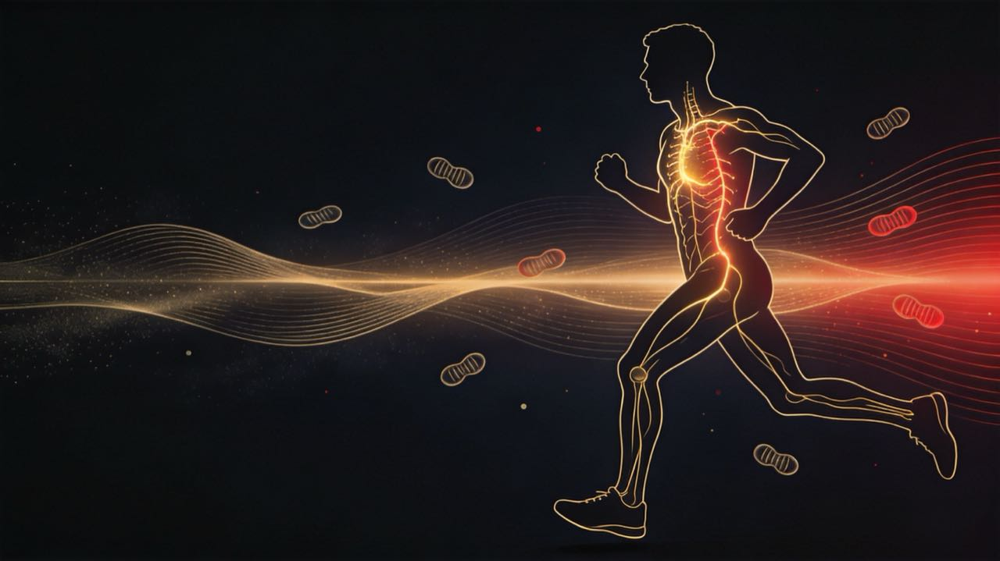
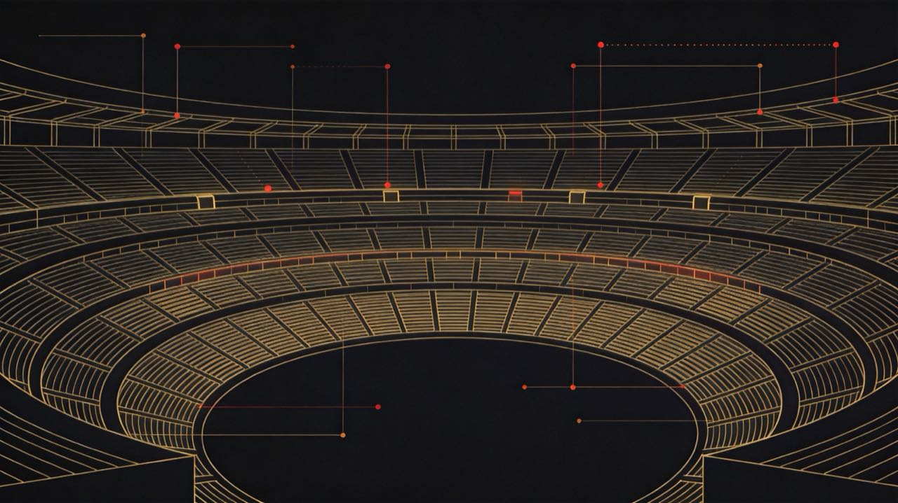
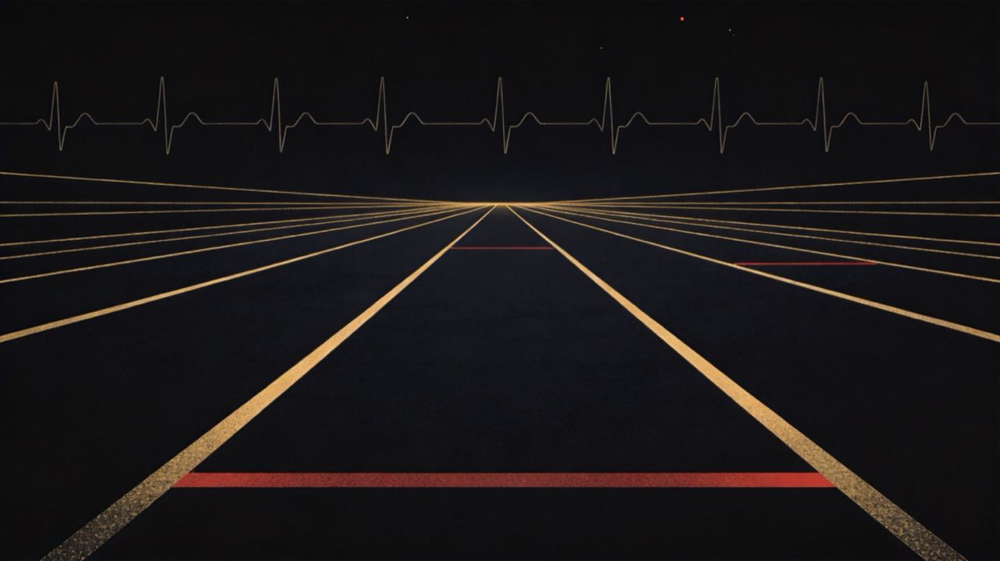
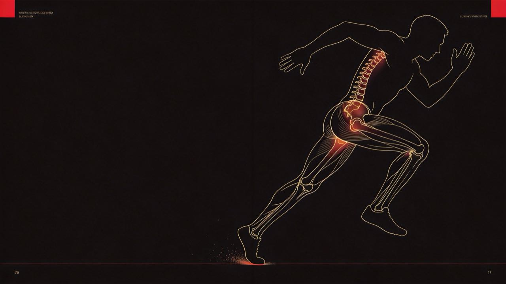
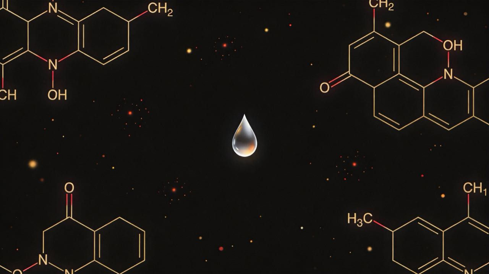
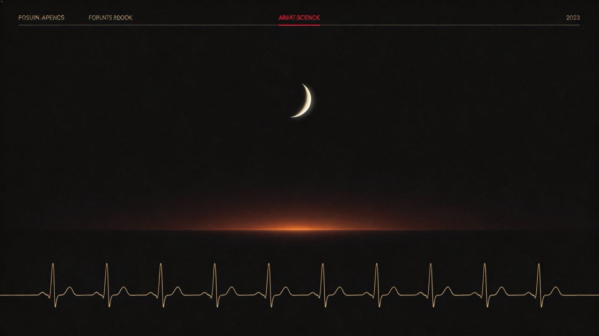
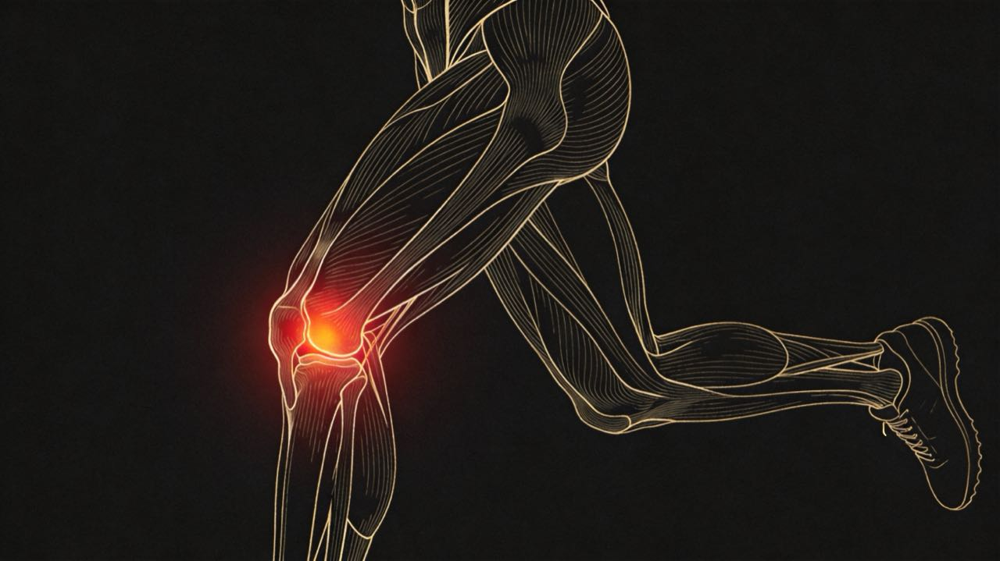
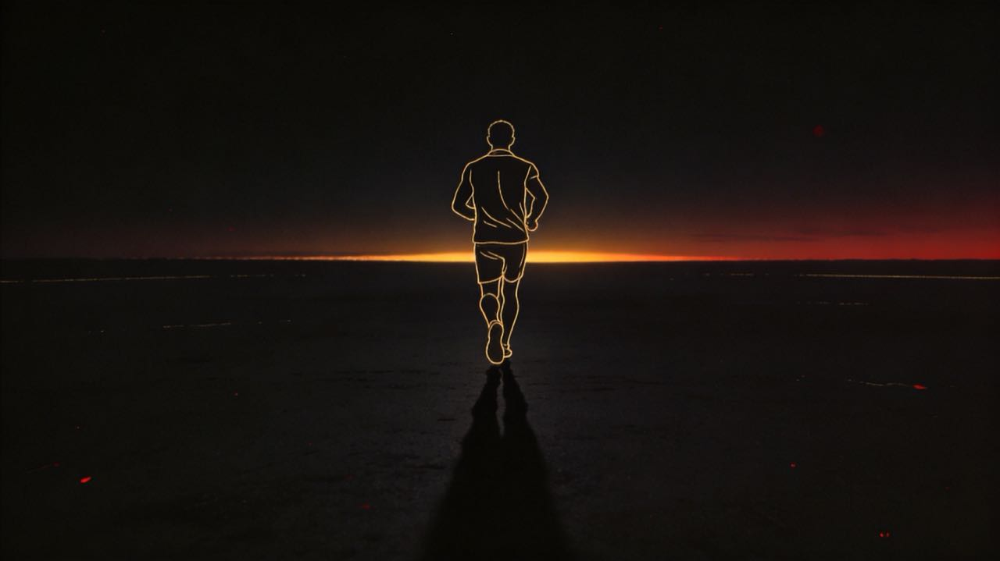

从能量代谢到比赛策略，从训练理论到康复康养。 一本面向 中级及以上长距离跑者 / 越野跑者 的深度技术手册。 上马 2026 破三备战版本，含基于你 6 个月训练数据的个性化标注。

你的身体在跑步时到底在做什么 —— 能量代谢、心血管反应、肌肉适应。所有训练方法的底层逻辑都从这里出发。
耐力跑步本质是 "有氧能量系统的极致工程"。VO2max 是天花板，乳酸阈是巡航高度，跑步经济性是油耗效率。三者由不同训练方式刺激，遵守"能不刺激高阶就先打底层"的次序。
人体供能来自三套并联系统，按强度 / 时长不同切换主导，但 从未独立工作 —— 三套永远同时运转，比例不同。
磷酸肌酸直接重合成 ATP。短跑、起跑加速、Strides 加速段、最后冲刺 100m 用。零乳酸副产物。
葡萄糖 → 丙酮酸 → 乳酸。中距离跑 400-800m、间歇课主战场。乳酸堆积是疲劳信号但不是原因。
线粒体内糖原 + 脂肪 + (少量蛋白) 完全氧化。马拉松 99% 靠它。脂肪供能比例 = 强度反函数。
乳酸不是废物，是燃料。 1970 年代误传至今的"乳酸 = 疲劳元凶"已被推翻。现在的共识：乳酸是糖酵解的中间产物，肌肉与心脏会主动摄取并氧化它。感觉疲劳的真正原因是 H+ 浓度上升（pH 下降）+ 中枢神经下调输出，乳酸只是个相关性指标。
心率是跑者最便宜的"内部仪表" —— 一块手表就能看到心血管系统的实时状态。但它会撒谎（脱水、咖啡因、睡不好都让它漂），所以要懂怎么读，而不是机械追数字。
过去 6 个月 RHR 均线 51 bpm,但近 2 周降到 42-47 bpm。这是体能上行 + 副交感主导提升的好信号。如果你测过 HRmax(最近一次 34km 越野最高 HR 是多少?),可以用 HRR = HRmax − 47 重新校准 Z2 上限,可能比手表默认值更准。
最大摄氧量，定义：每公斤体重每分钟能利用的氧的毫升数（mL·kg⁻¹·min⁻¹）。
VO2max 不是终点指标，是结构指标。 一个 VO2max 70 的人不一定比 VO2max 60 的人马拉松快。决定比赛成绩的是 VO2max × 阈值百分比 × 跑步经济性 三者乘积。耐力运动员的训练应优先后两者（乳酸阈、RE），VO2max 是手段不是目标。
最大稳态乳酸 MLSS（Maximum Lactate Steady State）：血乳酸浓度能稳定不上升的最高强度。绝大多数跑者的 MLSS 配速 ≈ 半马 PB 配速。
VO2max 是发动机排量，乳酸阈是变速箱，RE 是空气阻力系数。同样 70 ml/kg/min 的两个跑者，RE 差 5% 就是马拉松成绩差 6-8 分钟。问题是 95% 的业余跑者完全不练 RE，把所有时间砸在跑量上 —— 而跑量恰恰是 6 种提升 RE 路径里 ROI 最低的之一。
你能跑多快，一半是基因决定的。马拉松世界冠军的腓肠肌切片里 I 型慢肌占 85-95%，普通人 50%，短跑冠军 25%。但这不是宿命论 —— IIa 是可塑性最大的纤维，耐力训练能把 IIx 驯化成 IIa，相当于把 V8 改装成省油的混动。sub-3 不需要精英的基因，需要把现有的 IIa 训练到位。
核心体温每升高 1°C，VO2max 下降 5-7%。这意味着30°C 的全马你不可能跑出 PB —— 不是意志力问题，是热力学问题。世界纪录 95% 在 10-15°C 起报名费的赛道上诞生不是巧合。上马 17-18°C 是上限，柏林 10-12°C 才是 sub-3 的天选场。

业内 5 大主流体系 + 1 个近 10 年的爆款（挪威双阈值）。理解差异才能选对自己的路径。
所有耐力训练理论的核心问题只有两个：训练量 vs 强度的比例、以及 强度如何分布。"80% 慢、20% 高"是当今金标准，但顶级选手正在用挪威双阈值法重写规则。
| 层级 | 时长 | 关注 | 例子 |
|---|---|---|---|
| Macro 大周期 | 3-12 月 | 目标赛季，从基础到比赛的整体弧线 | 你的 23 周上马计划 |
| Meso 中周期 | 3-6 周 | 专项阶段（基础 / 强化 / 赛前 / 减量） | 基础期 W1-W6 |
| Micro 小周期 | 7-10 天 | 一周课表结构，质量课分布 | 周二间歇 + 周四节奏 + 周六长距 |
先大量低强度建有氧基础（10-16 周），再加强度（4-8 周），最后减量。你的计划属于这一派。
先短距快、后长距慢。短距离赛季常用，马拉松少见。
每个中周期高度聚焦单一能力（如纯有氧块 + 纯阈值块）。精英选手 + 训练时间紧张者用得多。
这是过去 20 年运动科学最大的研究方向。Stephen Seiler（挪威）的工作奠定了 极化训练 80/20 的科学基础。
| 体系 | 强度分布 | 代表人物 | 适合 |
|---|---|---|---|
| 极化 Polarized | 80/0/20 (易/中/高) | Seiler, Eliud Kipchoge | 已具备扎实基础的精英 / 进阶 |
| 阈值 Threshold | 60/35/5 | Ingebrigtsen 兄弟（早期） | 愿意每周做 2-3 次阈值课的人 |
| 金字塔 Pyramidal | 70/20/10 | Lydiard 经典 | 新手 / 中级 |
| 双阈值 Double Threshold | 75/22/3 | 挪威 Ingebrigtsen 现役 | 每周可练 12+ 次的精英 |
业余跑者最常见错误：所有跑都不够慢也不够快，落在 Z3 中等强度 (gray zone)。这种训练既不能充分刺激有氧适应（太快），也不能刺激高强度适应（太慢），只是积累疲劳。解药：硬性把 80% 跑量压到 Z2 以下、20% 推到 Z4-5 之上。
近 10 年耐力训练最热的方法论。Jakob Ingebrigtsen（5000m / 1500m 世界冠军）、Kristian Blummenfelt（铁三奥运冠军）、Gustav Iden 的训练核心。
传统 VO2max 间歇课带来高中枢疲劳，限制了每周质量训练频次。把 1 次 VO2max 课换成 2 次"次阈值"乳酸阈课，等量代谢刺激 + 减半中枢负担 + 翻倍训练频率 = 适应曲线陡升。
除非你有时间做 12+ 次 / 周训练，否则别全盘照搬。但可以借鉴一个原则：把"高强度间歇课"的频率与质量分散到多次"次阈值"课中（比如把一次硬核 6×1000m I 课换成两次 3×2km T 课），中枢疲劳更可控。
美国最广泛使用的跑步训练系统。核心：每次比赛成绩→ VDOT 数值 → 自动生成所有训练区间的精确配速。
| 区间 | 定义 | 典型用法 | 占周量 |
|---|---|---|---|
| E Easy | 60-79% HRmax / 18-25% 慢于 5K 配速 | 恢复 / 长距 / 多数周中跑 | ~70% |
| M Marathon | 马拉松目标配速 | 长距中段、专项耐力 | 15% |
| T Threshold | 能维持 1 小时的配速 ≈ 半马配速 | 节奏跑 / 巡航间歇 | 10% |
| I Interval | ≈ 5K 全力配速 | 3-5 分钟工作段 × 4-6 组 | 8% |
| R Repetition | ≈ 1500m 全力配速 | 200-400m × 多次，发展神经驱动 | 5% |
把目标代入 Daniels 表里看：当前能力 全马 3:20 对应 VDOT 48，恰好对应 10K 39:00 —— 这是一致、不偏科的画像，说明 5K/10K 端速度与全马耐力匹配，问题不在某一极。破三（sub-3:00）= VDOT 54，全马 2:58:21。从 48 跳到 54 是 6 个 VDOT 点，相当于 VO2max 当量提升约 12.5%。
23 周拿下 6 个点：可行，但属激进区间。业内经验值 —— 精英级每年 1-2 点、中等水平每年 3-5 点、新手通过结构化训练首年 5-8 点。你不算新手所以涨幅天花板更低，6 点要求训练量、营养、睡眠三项同时不掉链子，任何一环放水都会变成「涨 3-4 点 + PB 但没破三」。(Daniels 2014)
| VDOT | 全马 | 半马 | 10K | 5K |
|---|---|---|---|---|
| 48 | 3:21:29 | 1:36:09 | 39:00 | 18:48 |
| 50 | 3:14:06 | 1:32:34 | 37:31 | 18:05 |
| 52 | 3:05:58 | 1:29:15 | 36:09 | 17:24 |
| 54 | 2:58:21 | 1:26:15 | 34:54 | 16:48 |
每 4-6 周用一次 5K/10K 测试或半马模拟反推当前 VDOT，对照训练配速表更新 E/M/T/I/R 五档配速。涨 1 点 ≈ 全马快 3-4 分钟。完整 VDOT × 配速大表见 附录 A.2。
Pete Pfitzinger 的《Advanced Marathoning》是中高级马拉松跑者的"教科书"。它和 Daniels 体系最大的区别：更长的长距、更多 MP 段、强调"长距 + 中强度"的组合 —— 因为马拉松的真正挑战不是"能跑多快"，而是"腿已经累了还能不能跑 MP"。
Pfitzinger 学派的核心信条："马拉松后半段崩盘的人不是 VO2max 不够,是没在累的时候跑过 MP"。一次 32km 长距前 8km 是热身,真正的训练在 8-24km 这 16 公里 MP 上 —— 你的腿越累、心率越漂、心理越想停,这段就越接近比赛日 25-40km 的真实状态。(Pfitzinger 2009)
新西兰教练 Arthur Lydiard 1960 年代奠基,影响了 Snell、Halberg、几代精英中长跑选手。他的核心信条只有一句话:"没有有氧基础就没有专项强度" —— 现代极化训练 80/20 的雏形,半个世纪前就被他写出来了。
Lydiard 体系适合有时间 + 无伤病史 + 越野基因的人。它不是给业余跑者的完美方案 —— 200+ km/周这种量,99% 的业余跑者既没时间也没身体扛得住。但它的有氧基础至上哲学,是所有现代体系的底层操作系统。
"Lydiard 在 21 世纪业余跑者圈基本不可执行"。他的精英学生们能跑 200km/周,因为那是他们的全职工作 —— 一天两次训练,中间睡个午觉。而你周日训练 14-18 小时,上限就是 120km/周。不要硬抄 Lydiard 的跑量数字,要学他的"基础至上"哲学:基础期老老实实跑慢、绝对不引入强度。当代 Magness 等教练把 Lydiard 思想改造成了"4-6 个月纯有氧基础 + 后段引入强度"的版本,更适配业余生活节奏。(Lydiard & Gilmour 1962; Magness 2014)
用单一数值量化"你被训练得多累 + 多有恢复 + 多有体能"。Strava / TrainingPeaks / Coros 都基于此。
Chronic Training Load，指数加权 42 天平均训练负荷，约等于"体能水平"。爬升越慢越稳。
Acute Training Load，7 天加权平均，代表"近期疲劳"。
Training Stress Balance。-30~-10 训练中；-10~+5 平衡；+5~+25 减量峰值；>+25 失去体能。
过去 6 个月你的周量从 2 月底大幅滑坡（<20 km）恢复到现在 60-90 km，4 周均线在 78 km。CTL 在 6 月份预期会爬升到 ~12-14（Coros TSS / TrimP 体系）。建议关注：你的 ATL/CTL 比例（业内安全区 0.8-1.3）；2 月底滑坡前的高负荷模式不要重演。

每种训练课刺激什么生理通路 —— 理解了你就不会再问"为什么不能天天间歇"。
耐力训练只有 5 种核心课型，每种刺激不同适应。混在一起搞不分清楚 = 适应模糊。知道每次课在练什么，比知道课表本身重要 10 倍。
"长距离 = 累 + 慢"。 大多数业余跑者把长距跑太快，结果是：质量恢复时间翻倍、毛细血管化收益减半、伤病风险上升。判断标准：长距全程能用鼻子呼吸 + 能讲完整句子。做不到 = 太快了。
提升 乳酸阈百分比（你能以更高 VO2max 比例运行而不堆积乳酸）。这是耐力运动最值钱的适应。
20-40 分钟连续 @ T 配速（≈ 半马配速）。心理上更难，但生理刺激更纯。
例：3km E + 30 min T + 3km E。你 W6/W7/W8 都是这类。
1.5-3 km × 多组 @ T，组间 90 秒慢跑。同等代谢刺激但心理可接受度高。
例：3km E + 4 × 2km T (jog 90s) + 2km E。
| 工作段时长 | 配速锚点 | 组数 | 组间 |
|---|---|---|---|
| 400-600m | ≈ 3K 配速 (I) | 8-12 | 1:1 jog |
| 800-1200m | ≈ 5K 配速 (I) | 5-8 | 1:1 jog |
| 1600m-1mile | ≈ 5K 配速 (I) | 4-6 | 2-3 min jog |
| 2000-3000m | ≈ 10K 配速 (I-T 间) | 3-4 | 2-3 min jog |
"间歇课的总工作量上限 ≈ 5-8km。" 超过这个量 = 你跑得不够快，配速降级了，但你以为自己很努力。判断标准：最后一组应该和第一组配速差距 ≤ 2%。能维持到最后一组的配速才是真正的 I 配速。
这是马拉松唯一能"模拟撞墙感"而又不真正撞墙的训练。糖原消耗到 70-80%，但还有余地适应 —— 这次课的恢复 / 蛋白合成信号比任何课都强。没完成过 2.5+ 小时 MP 段长距的人，破三概率显著下降（Pfitzinger 数据）。
容易被忽视但是顶级选手都做的"维生素"训练。
你做了不少越野跑（最近一次 34km / 1995m 爬升），这部分单独讲。
| 课型 | 结构 | 目的 |
|---|---|---|
| 陡坡重复 | 8-12 × 60-90 秒陡坡（>10%），下坡走回 | 力量耐力、VO2max |
| 长坡持续 | 20-40 分钟连续上坡 @ T-MP HR | 阈值 + 力量耐力 |
| 下坡训练 | 8 × 200-400m 下坡 @ 5K 配速 | 离心力量 + 神经适应 |
| 技术山地长距 | 3-5 小时 + 1000-2000m 爬升 | 整合所有能力 + fueling 测试 |
你过去 6 个月有 7 次越野，累计爬升 8443m，单次最高 1995m（5/17 那场 34km）。你的"长距 + 爬升"基础比同水平公路跑者要强。这对破三是隐性资产 —— 公路 32km 含 MP 长距对你来说肌肉负荷更可承受。但记住，越野的有氧基础不能完全替代公路 MP 训练的代谢专项性 —— 上马是平路，需要专门适应"无下坡反弹"的纯前进感。

跑者最被低估的一块：力量训练不会让你"变重变慢"，反而是 RE 和抗伤的最高 ROI 投资。
跑者必须做力量。 每周 2 次、每次 20-40 分钟，重负重为主（5-8 RM）。这是性价比最高的破三投资之一 —— 同等训练量下 RE 提升 2-8%、跑步伤病率降低 30-50%。
业余跑者最常见的错觉是"跑步本身就是训练"。错。你跑得越多，越需要力量训练抵消单一矢状面运动带来的肌肉失衡 —— 臀中肌弱、腘绳偏弱、踝关节稳定性差，是 80% 跑步伤病的根源。下面 8 个动作不是"可选项"，是 sub-3 的最低门槛。
剂量：5RM × 3-5 组 · 组间 3 min
收益：腿部峰值力量 +20-30%，直接提升 RE 与冲刺能力 · 防膝盖前侧疼痛
剂量：6-8RM × 3 组 / 腿 · 哑铃或壶铃
收益：纠正左右腿差异 · 防腘绳拉伤 + 改善触地稳定性
剂量：8RM × 3 组 / 腿 · 哑铃负重
收益：单腿力量 · 髋稳定性 · 显著降低 ITBS 概率
剂量：6-8RM × 3-4 组 · 顶峰挤压 1 s
收益：臀大肌激活 · 蹬地推进力 · 解决跑姿后撩腿无力
剂量：侧平板 30-60 s × 3 / 侧 · 动态变体优先
收益：核心抗旋 · 减小躯干侧倾 · 改善后半程跑姿崩塌
剂量：3-5 次 × 3 组 · 慢速离心 4-6 s
收益：腘绳拉伤风险下降 51% · 大数据证据级 A (van Dyk 2019)
剂量：10-15 次 × 3 组 / 腿 · 直腿 + 屈腿各做
收益：跟腱僵度 +15% → 弹性回弹更强 · 直接改善 RE
剂量：30 m × 4 组 · 重量 = 体重 × 0.5 / 手
收益：全身整合稳定 · 核心抗侧屈 · 实战版"扛着身体跑"
跳跃类训练，刺激 跟腱弹性储能 + 神经驱动 + IIa 纤维。证据等级仅次于重负重力量。
| 时段 | 力量训练 | 原因 |
|---|---|---|
| 基础期 | 2-3 次 / 周，最大力量为主 | 跑量未饱和，可承受力量负荷 |
| 强化期 | 2 次 / 周，维持模式 | 跑步质量提升，力量维持即可 |
| 赛前期 | 1-2 次 / 周，减重保留爆发 | 避免增加疲劳 |
| Taper | 1 次 / 周 → 比赛前 10 天停 | 避免肌肉酸痛影响比赛 |
研究共识：同一天做的话，先做关注的那个。
跑姿这事 90% 的话术是信仰，10% 是数据。"中前掌着地更经济"被反复传销，但 Lieberman 2010 之后的复制研究都说明 —— 在控制了配速、鞋款、个体差异之后，着地方式对 RE 的影响几乎不可检出。真正有证据的就三件事：步频、触地点位置、核心稳定。其他都是教练话术。
配速越快、步频越高 · 不要刻意刻意 180 把自己练成小碎步
跑者真正受益的是 活动度 (mobility)，不是柔韧性 (flexibility)。

从日常饮食到比赛日补给，从碳水 periodization 到补给站策略。营养是马拉松成绩"最容易拿但最常丢的"10%。
耐力跑者的饮食铁则：碳水占大头（6-10 g/kg）、蛋白足够（1.6-2.0 g/kg）、脂肪不忌。比赛日 carb load 8-10 g/kg × 2-3 天；比赛中 60-90 g/h 碳水（顶级选手已推到 120 g/h）。水合个体化，看出汗率。
所有数字按 每 kg 体重 给出 —— 绝对克数只对某个体重的人成立。不同队友体重不一，请按自己的 kg 算。下表附 60/70/80 kg 三档示例。
| 体重 | 日常碳水/天 | Carb Load/天 | 蛋白/天 | 赛中/h |
|---|---|---|---|---|
| 60 kg | 240-420 g | 480-600 g | 96-120 g | 60-90 g |
| 70 kg | 280-490 g | 560-700 g | 112-140 g | 60-90 g |
| 80 kg | 320-560 g | 640-800 g | 128-160 g | 60-90 g |
赛中碳水（60-90 g/h）与体重弱相关、与强度+肠道耐受度强相关。80 kg 与 60 kg 跑者同配速下肝糖耗速差异远小于直觉。(Burke et al. 2019; Thomas et al. 2016)
| 时段 | 需要 / 推荐 | 例 |
|---|---|---|
| 训前 2-3 小时 | 正餐：低脂 + 中度碳水 + 适量蛋白 | 米饭 + 鸡胸肉 + 蔬菜 |
| 训前 30-60 min | 易消化碳水 30-60 g（如果训练 > 90 min） | 香蕉、面包、能量棒 |
| 训中 < 60 min | 水即可 | — |
| 训中 60-90 min | 30-60 g/h 碳水 | 1 包能量胶 + 水 |
| 训中 > 90 min | 60-90 g/h 碳水 + 电解质 | 能量胶 + 运动饮料交替 |
| 训后 30-60 min | 碳水 1.0-1.2 g/kg + 蛋白 20-30 g | 米饭 + 三文鱼，或饭团 + 蛋白粉 |
老式"7 天 carb depletion + 3 天 carb load"已被淘汰。当前共识：赛前 48-72 小时，8-10 g/kg 碳水，降低纤维 / 脂肪 / 蛋白。
过去 10 年 sports nutrition 的最大突破：消化吸收碳水的能力可被训练。世界纪录马拉松选手 Eliud Kipchoge 比赛中摄入约 100 g/h；Tadej Pogačar 等顶级铁三 / 公路自行车选手已推到 120-140 g/h。
早年（2004-2015）推荐的混合比例是 2:1（葡 2 + 果 1）。Jeukendrup 团队 2020 年后更新为 1:0.8，原因是高摄入场景（>90 g/h）下，更多果糖比例反而能减少胃肠不适、提升氧化率到 ~1.75 g/min。市售凝胶里：Maurten 320 / SiS Beta Fuel 已采用 1:0.8；GU、Cliff Shot Bloks 仍是 2:1 —— 读配料表比读营销页有用。日常训练 60 g/h 以下两种都行；目标超 80 g/h，认准新比例。(Jeukendrup 2020; King et al. 2022)
消化能力必须训练。直接在比赛日尝试 90 g/h 几乎一定胃绞痛 / 拉肚子。从训练中逐步增加：
"碳水化合物补给上限不是 60 g/h，是 90-120 g/h。" 老观点（60 g/h 上限）是基于葡萄糖单转运体的研究，已被葡 + 果糖配方推翻。但必须训练胃才能耐受 —— 直接拉到 100g/h 多半翻车。
"低钠血症 (hyponatremia) 比脱水更危险。" 不少马拉松悲剧来自补水过多稀释血钠，而非脱水。不要按"每 5km 必喝"机械补水，按口渴 + 出汗率个性化决定。
3-6 mg/kg，赛前 45-60 min。耐力表现 +2-4%。注意你日常咖啡因摄入，赛前 3 天降量提高敏感性。
赛前 2-3 天每天 500 mL 甜菜根汁，或 6.4 mmol 硝酸盐。提升 RE 约 1-3%。
0.2-0.3 g/kg 赛前 60-90 min。提升缓冲能力，对 10K-半马更显著。胃肠副作用大，需训练。
3.2-6.4 g/天 × 4-6 周。提升肌肉肌肽，缓冲 H+。马拉松效果有限，更适合 800m-5K。
3-5 g/天。对力量训练效果强，对纯耐力影响小。可作为力量训练辅助。
证据弱。如果蛋白摄入足够，意义不大。
你周量 70-90 km，估算每日消耗约 2800-3200 kcal。建议：每天 65 × 7 ≈ 460 g 碳水（约 15 碗米饭等价），蛋白 65 × 1.8 = 117 g（约 4 个鸡蛋 + 鸡胸 200g + 1 杯奶 + 1 份豆制品）。
赛前 carb load 目标 520-650 g/day × 3 天。10/22-10/24 三天加量、降纤维 / 油脂。
比赛中目标 75-90 g/h 碳水（每 30 min 一包能量胶 25-30 g + 在补给站喝运动饮料）。从 W12 开始的长距必须练胃，不要赛日才试。

训练只是"打开适应通道"，恢复才是"完成适应"。睡眠是恢复的金标准，其他一切方法都是补丁。
睡眠是跑者最被低估的训练。 8+ 小时睡眠对运动表现的提升超过任何补剂、按摩、冰浴。其他恢复手段是修补，睡眠才是建造。每晚少睡 1 小时，VO2max 表现 -3% 起，伤病风险 +1.7 倍。
常见说法「每晚少睡 1 小时 → VO2max -3%」是偷换概念。原始 Reilly & Edwards (1993) 研究的是急性完全剥夺一晚睡眠后第二天的力竭测试表现，约下降 3% —— 这是一次性极端情境，不是「每天少睡 1 小时」的累积效应。
真正影响跑者的是慢性睡眠不足，机制完全不同：(1) 皮质醇基线升高 → 肌肉合成代谢受损；(2) 糖原储备效率下降 10-15%；(3) 免疫功能下降 → 上呼吸道感染概率升高；(4) 受伤风险显著上升 —— Milewski (2014) 对青少年运动员的研究显示，每晚睡眠 <8 小时者运动损伤风险是 ≥8 小时者的 1.7 倍。VO2max 这种生理顶值在慢性少睡下通常变化不大，但训练耐受度、恢复速度、伤病率才是真正被磨损的指标。
| 睡眠场景 | 影响 | 研究依据 |
|---|---|---|
| 1 晚完全剥夺 | 力竭跑表现 -3%，反应时间 ≈ 血液酒精 0.08% | Reilly & Edwards 1993 |
| 连续 1 周 < 6h/晚 | 注意力 -10-15%、糖原储备效率下降 | Mah 2011 |
| 慢性 < 8h | RHR 上升、皮质醇升高、伤病风险 +1.7x | Milewski 2014; Watson 2017 |
Reilly & Edwards 是单晚全剥夺设计（n=8、力竭跑）；Milewski 是 112 名运动员的横断面流行病学。前者描述「急性极端」，后者描述「慢性常态」。把单次实验外推到日常作息会得出夸张结论 —— 但后者足以解释为何长期 6 小时党更容易伤。
心率变异性 (HRV) = 相邻心跳间隔的微观波动。它反映自主神经的张力 —— 高 HRV = 副交感主导 = 恢复良好;低 HRV = 交感主导 = 疲劳/压力/病前。HRV 是少数能"提前几天预测过训"的指标,但绝大多数业余跑者用错了方式。
"看单天 HRV 决定今天怎么练"是 95% 业余跑者的用法 —— 也是 95% 业余跑者用 HRV 失败的原因。HRV 单日波动可以高达 ±25%(咖啡、酒、睡眠位置、压力、月经周期都影响),拿单天数据决策 = 抛硬币。正确用法:看 7 日均线 vs 28 日 baseline 的趋势。趋势走平/上行 = 按计划训练;趋势连续 3 天下行 + 跌破 baseline 10% = 这周必须降量。(Plews 2013; Vesterinen 2016)
过去 6 个月你只有 40 个夜晚有 HRV 记录(覆盖率 22%)。这是最大的盲区。RHR 你有 180/183 天,但 HRV 这种"过训前哨"指标几乎没有连续数据。
建议:每晚戴表睡,先用 28 天建立 baseline。23 周训练里,HRV 7 日均线如果开始持续下降 (>10% baseline),那周必须降量。
你 2 月底那次明显的训练崩盘(HRV 15-21 / RHR 60+ / 周量 <20 km)就是经典三连击信号。这次备战期不能再来一次。
训练日 + 1 的"休息日"该不该跑？
"训练后立即冰浴"对耐力跑者比对力量训练者更友好，因为耐力训练的核心适应不依赖于强烈的 mTOR / 蛋白合成信号（那些会被冷水抑制）。但仍建议：力量训练日不做冰浴；高强度间歇日不立即做冰浴（等 4-6h）；比赛后做无碍。
| 方式 | 证据等级 | 实际作用 |
|---|---|---|
| 专业运动按摩 | ★★★ | 主观恢复感强、轻度抗炎、放松神经 |
| 泡沫轴 | ★★☆ | 临时缓解肌肉张力，证据不强但便宜易用 |
| 按摩枪 | ★★☆ | 类似泡沫轴，更便捷 |
| 加压靴（NormaTec 等） | ★★☆ | 主观恢复好，客观数据有限 |
| 压力袜 / 长腿压缩 | ★★☆ | 跑中有限作用，跑后辅助静脉回流可能有用 |
| PEMF / 脉冲电磁 | ★☆☆ | 证据非常弱，多为安慰剂 |
过训不是"今天累"。它是持续 4+ 周的全身性失代偿。
破三的最后 5%、撞墙时的判断、长距离的孤独、退赛或推进 —— 都是心理战场。
身体决定你能跑多快的上限，心理决定你能跑多接近上限。马拉松后半段，"中央调速器"的下调输出是真正的限速器；学会与不适共处、训练注意力、构建自我对话系统，是破三的核心技能。
Deci 与 Ryan 提出的 自我决定论（Self-Determination Theory, SDT） 是过去四十年运动心理学最被反复验证的动机框架 (Deci & Ryan 2000)。它的核心论断只有一句话：不是所有动机都等价。被罚跑出来的 30 公里和因为热爱跑出来的 30 公里，在你身体里留下的痕迹完全不同——后者第二天还想穿鞋出门，前者会让你看到跑鞋就胃疼。
SDT 认为人的动机由三个基本心理需求驱动：自主（Autonomy）、胜任（Competence）、关系（Relatedness）。这三个需求被满足得越充分，动机就越靠近"内在"那一端，行为也越能长期持续。
把所有目标语句从结果层翻译成身份层。后者激活的是"我是谁"，前者只激活"我想要什么"——大脑对前者的拒绝阻力远高于后者。
"我要破三"
"我要瘦 10 斤"
"我要跑完马拉松"
"我是每周训 5 次的跑者"
"我是一个照顾身体的人"
"我是一个为重要事情做长期准备的人"
Mantra："我不是在训练破三。我是一个每周训 5 次的跑者，破三只是顺便发生的事。"
下次训练计划做不下去时，问自己三个问题：
① 自主：这个计划是我选的，还是抄的？我能不能调整？
② 胜任：我最近有没有完成过让自己有成就感的训练？
③ 关系：我有没有跑者朋友 / 训练社群，能一起聊配速聊鞋？
三项里任一项长期为 0，动机系统就在悄悄掉电——和身体的过度训练一样真实。
Locke 与 Latham 几十年的目标设定研究反复证明一件事：具体、有挑战、可控的目标产生最高表现 (Locke & Latham 2002)。问题是大多数业余跑者只设了"具体"和"有挑战"——破三、PB、波马达标——但完全忽略了可控。
专业教练把目标分成三层：结果目标（成绩、名次）、表现目标（自己可达成的指标）、过程目标（每次训练就能做到的动作）。三者越往下越可控，越往下越适合做日常的心理锚点。
例："上海马拉松破 3 小时"
影响因素：对手、天气、补给点、当天身体、赛道平整度
何时用：赛季初定方向；赛前 1 周锁定。
日常训练里不该频繁出现。
例："3 个月内把 10K 跑进 41 分"
影响因素：训练完成度、伤病、睡眠、体重
何时用：训练周期目标；每 4-6 周回顾一次。
例："今天 E 跑全程心率 ≤ 145"
"间歇 6×800m 都不掉到 3'10"以下"
影响因素：专注、执行
何时用：每一次训练都用。日常心理锚点应锁在这一层。
训练期主要应该用过程目标。每天起床想着"今天我要破三"——你 200 天里有 199 天都在做"还没破三"的事，焦虑会沿着这 200 天累积爆表，最后比赛当天你已经被自己耗空了。
结果目标的正确用法是"定向 + 收纳"：周期开始时定一次方向，比赛前一周拿出来锁定一次，其余 95% 的时间，把它放进抽屉。日常只盯过程：今天 E 跑配速不破、间歇心率达标、长距离最后 5 公里不掉速。过程做到了，结果只是数学问题。
Mantra："我不为破三而跑。我为今天这一组跑好而跑。"
很多跑者以为"焦虑越低越好"——错。Hanin 的 个体最佳功能区（Individual Zones of Optimal Functioning, IZOF）模型指出：每个人都有一个最佳的焦虑/激活水平区间，过高过低都会让表现下降 (Hanin 1997)。
有人需要在起跑前心跳到 110、肾上腺素拉满才能跑出 PB；有人则必须冷静得像在做数学题，听耳机里的钢琴曲才能进入状态。差异极大，没有标准答案。你要做的不是消除焦虑，而是找到自己的峰值带，然后把当下拨进去。
回想过去 5 场你跑得最好的比赛 / 训练。起跑前 10 分钟，你的心理状态分别在哪种区间？
□ 兴奋到话多、心跳飞快 → 你的峰值带偏高，调节工具应是激活类（音乐、跺地、短冲）
□ 平静到像准备做数学题 → 你的峰值带偏低，调节工具应是镇静类（4-7-8、身体扫描）
□ 一半一半——身体兴奋、头脑冷静 → 经典 PB 状态，记住这种"双轨"感觉
Mantra："我不是在消除紧张。我是在把紧张拨到我的频道上。"
Morgan 与 Pollock 在 70 年代研究精英马拉松选手时发现了一件反直觉的事 (Morgan & Pollock 1977)：精英跑者比赛中绝大部分时间在"内向关注"（Associative）——监控呼吸、心率、肌肉张力、配速；而业余跑者更多用"外向解离"（Dissociative）——听音乐、看风景、想晚饭、跟人聊天。
但这不意味着 associative 就高级。两种策略各有最佳使用场景。现代运动心理学认为：切换能力比单一偏好更重要。优秀的业余跑者会在比赛中根据阶段、状态、地形灵活切换两套策略。
特点：注意力锁在身体内部信号——呼吸节奏、心率、步频、足底落地、配速感、肌肉酸度。
何时用：高强度阶段（间歇课、节奏跑、马拉松 30km 之后）、需要精细调控配速时、感觉异常需要排查时。
优点：精确管理体能配比，避免"前段嗨爆 后段崩盘"，最大化能量效率。
缺点：长时间用会精神疲劳；如果体感是"痛"，会持续放大痛感。
代表案例：Frank Shorter、Eliud Kipchoge——比赛中几乎全程内向监控，配速误差极小。
特点：注意力转向身体外部——音乐、风景、聊天、心算、想象、数路边的树。
何时用：长距离 E 跑、马拉松前 25km、心理疲劳期、跑过你觉得最痛的那 3 公里。
优点：稀释痛感，降低主观吃力度，让长时间运动变得可忍受。
缺点：容易掉速却察觉不到；忽略身体早期警告（脱水、抽筋前兆、伤病信号）。
代表案例：大多数 4 小时以上完赛的业余跑者——靠"想别的"挺过 30-37km 撞墙段。
→ 配速漂移 ±10 秒：切 Associative 校准
→ 心率突然飙升 / 异常感：切 Associative 排查
→ 撞墙感 / 想停下：切 Associative 5 分钟，确认是真崩还是脑崩
→ 确认是脑崩 / 痛但身体没事：切 Dissociative，找一首歌 / 一个数字游戏挺过去
→ 最后 5km 冲线：再切 Associative，把剩余电量榨干
Associative 三件套：
Dissociative 三件套：
① 心算（100 减 7 一路减下去）
② 想象终点画面（具体到家人脸 / 奖牌触感）
③ 数路标（每根路灯 / 每个公里牌）
注意力切换是肌肉，不是开关。如果你日常训练永远戴着耳机听播客（纯 Dissociative），比赛日你切不出 Associative；如果你日常永远盯着手表看心率（纯 Associative），你 35km 后会被痛感淹没。
分配建议：E 跑 70% Dissoc + 30% Assoc；M 跑 50/50；间歇 90% Assoc + 10% Dissoc 用在组间。每周至少有一次长距离不戴耳机不看表，纯粹和身体对话。
Mantra 双备份：
内向时——"呼吸、节奏、放松肩膀"
外向时——"再过 3 个路灯就到下一个补给"
你跑步时大脑里那个声音不会闭嘴。要么帮你，要么坑你。Blanchfield 团队 2014 年那个经典实验：24 名车手做力竭测试，对照组 vs 自我对话训练组（2 周），结果训练组耐力时间 +18%，RPE 同等强度下显著降低(Blanchfield et al. 2014)。这不是玄学，是可训练的认知技能。
南非运动生理学家 Tim Noakes 提出的颠覆性模型：你"跑不动了"不是肌肉真的没力气，而是大脑（前额叶 + 岛叶）综合各路传感器数据后预判性地下调了运动单元募集，保护核心器官不被自己玩死(Noakes 2011)。证据：力竭后再给现金奖励，被试还能再加速 30 秒——肌肉里明明还有储备。
运动可视化（mental imagery）的神经基础很硬：fMRI 显示"想象跑步"激活的运动皮层区域与真实跑步重叠 60–70%(Lebon et al. 2010)。意思是——大脑无法完全区分"真做"和"细致地想"。这给你一个免费的额外训练量，关键是做得对。
训练倦怠（burnout）和过度训练综合症（OTS）经常被混为一谈，但前者是心理面的训练-恢复失衡（"不想跑"），后者是生理面的（"不能跑"）。处理路径完全不同，先分辨清楚。
本质：心理资源耗竭。
解药：心理脱敏。停跑 1–2 周，换运动（骑车、游泳、徒步），换环境（不在惯常路线跑），重新连接"为什么开始"。
本质：生理系统失代偿。
解药：生理修复。完全休跑 4–12 周，营养介入，必要时就医。OTS 是医学问题不是意志力问题。

跑者年均伤病率 50-79%。大多数是负荷管理不当造成的，可避免。这部分是"风控"。
跑者 80% 的伤是"过用伤" —— 不是动作错，而是身体没准备好承担当前负荷。ACWR 急性/慢性负荷比保持 0.8-1.3 是黄金区间；超过 1.5 伤病风险翻倍。 (Gabbett 2016)
跑者年均伤病率 50-79%。这不是宿命 —— 80% 的跑步伤是"负荷管理失误"造成的,可以预防。下面 6 个最常见的伤,每个都有典型的"何时出现"和"如何回避"模式。
"80% 跑步伤是负荷管理问题,不是技术问题"。流行论坛文章把所有跑步伤归咎于"跑姿不对" —— 这话误导性极强。真实数据:90% 的 ITBS / PFPS / 跟腱炎都发生在跑量或强度 4 周内增加 > 30%之后。换言之 —— 不是你"跑得不对",是你升级太快。看 §8.2 ACWR 那一节,负荷比比跑姿更值得监控。(van Gent 2007; Gabbett 2016)
过去 7 天负荷 ÷ 过去 28 天平均负荷。这是伤病预测最强的单一指标。
| 痛感 | 判断 | 行动 |
|---|---|---|
| 0-2 | 无痛或轻微不适 | 正常训练 |
| 3-4 | 开始时疼，跑开后缓解 | 可以训练但降量 / 降速 20% |
| 5-6 | 跑中持续疼，跑姿改变 | 立即停止，至少 3-5 天交叉训练 |
| 7+ | 影响日常走路 / 上下楼梯 | 就医，可能是严重损伤 |
| 跑后 24h 仍疼 | 无论数值 | 降低当周负荷 30-50% |
从伤病恢复回跑的标准化阶梯（适用于跟腱炎 / PFPS / ITBS 等过用伤）：
每阶段无痛完成 2-3 次再进入下一阶段。急于跨阶段是二次受伤的主因。
过去叫"女性运动员三联征"，现在涵盖男女。核心：能量摄入长期不足训练消耗 → 生理系统全面下调。
处理：立即增加 200-500 kcal/day，减负 30%，3-6 个月内系统重置。
过去 6 个月你的 ACWR 大部分时间在合理区间，但2 月底有一个明显失代偿（HRV 15-21、RHR >60、跑量 <20 km）—— 那是典型的过载 / 病程 / 可能 RED-S 风险窗口。
23 周备战期最危险的两个时点：W10-W14 月跑量峰值期（120+ km/周）、W17-W19 锐化期高强度。
建议：每周末检查 ACWR，超过 1.4 立即降下一周量；W10/W13/W18 这三次关键长距前一周必须有 RHR / HRV 监控数据连续上行（不上行就跳过那次长距）。
23 周的训练能否兑现，看比赛前 2 周怎么减量 + 比赛日怎么执行。
Taper 的核心铁律：减跑量、不减强度。比赛日的核心铁律：前 5K 收着跑、后 5K 拼命跑。最常见的破三失败模式：起跑太快。
| 方式 | 跑量减幅 | 时长 | 适合 |
|---|---|---|---|
| 线性递减 | 每周 -25% | 2-3 周 | 跑量大 / 老将 |
| 指数递减 | 第 1 周 -20%、第 2 周 -40%、第 3 周 -60% | 3 周 | 大跑量 + 慢恢复者 |
| 陡然递减 (Sharp) | -40% → -60% → -75% | 2 周 | 已感觉过疲劳者 |
| 时间 | 动作 |
|---|---|
| 4:30-5:00 | 起床、喝 300 mL 水 + 一点点盐 / 钠片 |
| 5:00-5:30 | 赛前餐：100-150 g 碳水（白面包 + 蜂蜜 / 米粥 + 香蕉），低脂 + 低纤维 + 少蛋白 |
| 5:30-6:30 | 出门到赛场、检录 |
| 6:30-7:00 | 5-10 min 慢跑 + 动态准备 + 3-4 strides |
| 7:00-7:20 | 分区检录、咖啡因（3-5 mg/kg） |
| 7:25 | 能量胶 1 包（25-30 g 碳水）+ 100mL 水 |
| 7:30 | 起跑 |
马拉松成绩的决定性变量不是 VO2max,不是跑量,是前 10 公里你跑多快。前 5K 比目标快 5 秒/km,30K 后你会慢 30 秒/km —— 这就是马拉松的"复利定律"。负分段是 sub-3 的唯一安全路径,不接受任何 "感觉好就放" 的辩解。
"我状态好,前半放一点没事" —— 这句话是马拉松失败的最常见前奏。状态好 ≠ 配速可以快。状态好的真正用法是更精准地按目标配速跑(因为你能稳得住),而不是上调配速。前 10K 的配速决策权要还给"目标"而不是"感觉"。最稳的做法:前 10K 配速员跟着跑(找比你目标稍慢的),10K 后再自己决定。
"撞墙" (hitting the wall) 不是意志力崩盘,是肝糖原耗尽 + 中枢调速器报警的双重生理事件。马拉松 30-35K 段,肌糖原跌破 30% 临界,身体强制切换到脂肪供能 —— 输出功率下降 + 大脑发出"保护信号"——你以为是腿在罢工,其实是大脑在踩刹车。
"我能扛过去"是撞墙后最危险的念头。撞墙不是疲劳能扛的问题 —— 是糖原已经空了,生理上没有可调动的能量。试图"挺过去"= 进一步耗尽剩余糖原 → 完全崩溃 → 走走停停 → 完赛时间反而比"立即降速 + 补糖"慢 10-15 分钟。正确反应是冷静的剧本,不是意志力。(Coyle 1986; Jeukendrup 2014)
预防 >> 处理。本节剧本是给"撞了不要崩"的安全网,但真正的目标是不撞墙 —— carb load 充分 + 起跑控住前 10K + 比赛中按时补给 = 大概率 32K 后糖原仍在 25-35% 区间,微"撞"一下但不彻底崩。即使预防到位,30K 后仍有 15-20% 概率撞墙,剧本必须背熟。
10/25 上马起跑通常 7:00-7:30，赛日历年气温平均 17-18°C，10-11月上海早晨可能有湿冷。
建议：起跑前 30 min 穿薄外套保温，起跑前 5 min 脱掉寄存。雨备：穿防水袖套不防水短裤（短裤湿了反而不重）。
你的赛日 mantra 候选：
顶级业余圈的潜规则：从不设单一目标。单目标的致命缺陷在于它把整场比赛变成一个二元判决 —— 要么 PR 要么崩盘。一旦起跑发现顶风、体感重、心率漂得早，你的大脑会在 25K 处做出灾难性决策：「反正破不了三了，那我躺平」。三档目标把 42.195km 拆成了可滑动的决策框架，而不是一次性赌博。
设定逻辑（以 PR 3:20、目标破三为例）：
降档触发信号（任一出现立即切下一档）：① 10K 时平均心率比阈值高 5bpm 以上；② 25K 体感从 RPE 6 跳到 RPE 8；③ 连续两个 1K 分段步频下降 4+ spm；④ 出汗停止 + 皮肤起鸡皮（热射病前兆，直接 C 档或退赛）。
「我就是冲 A 不留余地」的跑者大概率跑出比 C 还差的成绩 (Stevinson & Biddle 1998)。比赛是认知任务，不是意志力测试 —— 预设撤退路径的人最终跑得更快，因为他们 30K 后还有脑子做决策。
业余跑者退赛/掉链子三大隐形杀手：撞墙、抽筋、厕所。前两个有人讨论，第三个被严重低估 —— 上马起跑前的 portaloo 队伍能排 20-30 分钟，起跑后 10K 内便意上来就是地狱。
起跑前 3 小时早餐（约 4:00 AM，目标 1-1.5 g/kg 碳水，低脂低纤维低蛋白）：
咖啡因 timing：起床即喝（4:00）1 杯黑咖啡 ≈ 100mg，起跑前 30-45 分钟（6:30 左右）补 1 粒 100-200mg 咖啡因片。总剂量 3-6 mg/kg 体重区间最优 (Burke 2008)。
排便流程定型：赛前 8-12 周的所有长距训练日，严格复制赛日早晨节奏（同样时间起、同样早餐、同样咖啡）。让肠道形成条件反射，出门前必排空。
Imodium（洛哌丁胺）在跑者论坛被神化，实际上是双刃剑 —— 它掩盖了你需要解决的真问题（乳糖不耐/纤维过多/紧张性肠综合症），且会增加运动中肠缺血风险。健康跑者不要碰，IBS 患者请医生开方。
起跑前最后一次厕所：起跑前 15-20 分钟，不是 5 分钟（队太长来不及）。如果到点还没便意，就放弃这次，起跑后 5K 处通常有移动厕所。带 2 张折叠纸巾塞口袋 —— portaloo 经常没纸。
上海马拉松 10 月底比赛日历史温度区间 8-22°C，主导风 NE 4-8 m/s。2017 年下过雨 + 大风，2019 年闷热 22°C，2023 年理想 14°C。不要赌天气，准备四套方案。
| 场景 | 装备调整 | 配速调整 | 补给策略 |
|---|---|---|---|
| 雨（任何温度） | 薄帽舌（防雨水入眼）、贴胸贴防止 T 恤渗透磨乳头、绑鞋带打死结 | 前 10K 慢 3-5 秒/km（防滑 + 控温） | 正常，但凝胶包装要先撕开放到口袋外 |
| 风 >6m/s | 薄风衣可起跑后扔/收腰、戴薄手套防失温 | 顶风段不追配速，看心率不超阈值即可 | 顺风段不要冲，留体力给顶风段 |
| 寒（<10°C） | 臂套（可中途撸下）、薄手套、起跑前垃圾袋保暖 | 前 5K 慢 5 秒/km 让身体进入工作状态 | 易忘喝水：每个补给点必须含一口，凉天脱水更隐蔽 |
| 暑（>22°C） | 白色帽 + 轻薄网眼背心、海绵随身 | 每升 5°C 慢 5-8 秒/km (Ely 2007) | 每站必停，水浇头 + 颈、电解质增加 30% |
上马高架段（前 20K）风速比地面预报高 1.5-2 倍，且无遮挡。NE 主导风意味着内环高架向东段顶风，提前心理建设。
跑者圈最危险的「经验之谈」之一：「起跑前吞两粒布洛芬压住膝盖痛」。这能让你住院。Western States 100 的研究显示，赛中服用 NSAID 的选手急性肾损伤（AKI）风险显著升高，血清肌酐异常率比对照组高一倍以上 (Lipman 2017)。
机制层面：马拉松本身会让肾血流减少 30-50%（血液优先供应肌肉和皮肤散热），布洛芬/萘普生通过抑制 COX-1/2 进一步收缩肾小球入球小动脉。脱水状态下两者叠加 = 急性肾小管坏死。同时 NSAID 抑制肾脏自由水排泄，与过量饮水叠加会显著放大运动相关低钠血症 (EAH) 风险 (Hew-Butler 2015) —— 这是马拉松唯一可能直接致死的并发症。
对乙酰氨基酚（扑热息痛）对肾相对安全但对肝有剂量依赖性损伤，且镇痛效果对运动性肌肉痛微乎其微。
正确做法：① 训练期能不吃就不吃，把疼痛当成信号而非敌人；② 赛中绝对不吃任何止痛药；③ 真有持续疼痛（尤其单侧、定点、刺痛）立刻退赛找医生 —— 那是伤病预警，不是要你镇压的噪音；④ 赛后 24 小时内也尽量不吃 NSAID，等水合恢复、尿色清亮后再考虑。
撞墙不是意志力问题 —— 是肝糖原耗尽（约 30-35K）叠加中枢疲劳的生理事件。多数业余跑者撞墙后做的所有事都是错的：加速试图「挺过去」、否认信号、灌咖啡因、吃止痛药。正确反应是一个冷静的剧本。
真正的预防是 90 分钟内 60-90g/h 碳水摄入 (Jeukendrup 2014)，而不是撞墙后的抢救。但即使预防到位，30K 后仍有 15-20% 概率撞墙 —— 所以剧本必须背熟。
队里有人飞外地参赛，旅行本身就能毁掉 12 周训练。规则不复杂，但每条都有人踩坑。
航班选择优先级：① 不能转机（行李丢失风险）；② 抵达时间 ≤ 比赛日前 48 小时；③ 飞行中每小时起来活动 5 分钟 + 喝 200ml 水防深静脉血栓。落地后第一件事不是睡觉 —— 是出去走 30 分钟接触阳光重置生物钟。
90% 的业余跑者对赛道的「研究」就是开赛道图看 5 秒然后关掉。这等于没看。真正的 recon 是让你的大脑在比赛时拥有「地图」 —— 知道下一段是上坡/顶风/补给点，决策质量会高 30%。
赛道熟悉度的价值不在于「知道怎么跑」，而在于消除不确定性 —— 大脑在已知环境中的运动调控比未知环境节能 5-10% (Marcora 2009)。这就是为什么主场选手的成绩往往超出训练数据预期。
退赛原因 top 5 里有三个是皮肤/脚问题（起泡、流血摩擦、趾甲脱落）。这些都 100% 可预防，但需要在赛前两周就开始执行，赛日早晨补救来不及。
凡士林部署点（全身约用量 30-40g，赛前 30 分钟厚涂）：
袜子：长距离（>30K）首选五趾袜 —— 趾间摩擦是长距起泡最常见位置。材质选 CoolMax/美利奴混纺，绝对不要纯棉。袜厚度必须和你已穿过 200+ km 的训练袜一致。
趾甲：赛前 5-7 天剪平（不是剪短），剪到指甲边缘不超过趾尖肉、刚好不戳鞋头即可。剪太短反而磨 —— 指甲的存在是保护趾尖软组织的。下坡跑黑趾甲多半是鞋码偏小 + 趾甲过长共同作用。
比赛鞋：必须在比赛前完成至少 1 次 30km+ 长距测试 + 1 次马配训练。竞速鞋（碳板）寿命短，跑过 200-300km 后回弹衰减明显。比赛鞋赛前里程控制在 80-150km 区间最佳 —— 既磨合好，又没疲劳。
「赛日穿新鞋有仪式感」是社交媒体毒鸡汤。任何赛日首次使用的装备（鞋、袜、短裤、bra、GPS 表带）都可能在 35K 处变成你的敌人。仪式感留给抵达终点拍照那一刻。
赛日早晨摩擦急救包（放赛前存包内）：备用 Compeed 水泡贴 2 片、医用胶带 1 小卷、小包凡士林。出发前最后 10 分钟做一次全身摩擦点检查 —— 发现任何已有的擦伤/红点，当场贴 Compeed，不要赌它「应该没事」。

比赛跑完不是结束。这一节加上业内前沿话题：你可能没想到，但顶级跑者都在做。
马拉松后至少 4 周不能正常训练，激素 / 免疫 / 肌肉损伤需要时间。Reverse Taper（倒减量）和及时设立次目标是关键。前沿话题：碳板鞋、CGM、热适应、月经周期训练、Sleep Low 等。
| 时段 | 训练 | 恢复重点 |
|---|---|---|
| 赛后当天 | 休息 | 补水 + 碳水 + 蛋白 + 慢走 10-15 min |
| D+1 to D+3 | 完全休息或极慢走 | 充足睡眠 + 抗炎食物（深海鱼 / 浆果 / 姜黄） |
| D+4 to D+7 | 15-30 min 极慢跑（< 65% HRmax），1-2 次 | 测试身体，任何疼痛立刻停 |
| Week 2 | 25-40 km 周量，全 E | 不做任何质量训练 |
| Week 3 | 45-60 km 周量，加入 strides | 开始引入轻松节奏跑 |
| Week 4 | 60-75 km 周量，1 次轻度质量课 | 评估状态，决定下一周期目标 |
赛后 2-6 周的低落期。多巴胺系统在长期目标完成后的"空窗"。不是病、不是性格弱，是正常生理现象。
「碳板鞋提升跑步经济性 4%」这个数字来自 Hoogkamer (2018) —— 但那是特定测试条件下、Nike Vaporfly 4% 原型对照传统竞速鞋的实验室结果，由 Nike 资助。后续独立 meta-analysis 显示真实情况复杂得多：Healey & Hoogkamer (2022)、Knopp et al. (2023) 综合多品牌数据，平均提升 2-4%，个体差异 0-6% —— 有约 10% 跑者穿上反而变慢（步态匹配不上摇杆几何）。 (Hoogkamer 2018)
厚泡棉（PEBA 中底）+ 碳板的「超鞋」组合里，碳板本身只贡献约 0.3-0.8%，真正的提升来自 PEBA 中底的能量回弹。所以「看到碳板就以为有 4%」是品牌营销造成的误读。
不是所有碳板鞋等价。4% 是 Nike Vaporfly 系列的专属数字；Adidas Adios Pro、Asics Metaspeed Sky/Edge 独立测试约 2-3%；二三线品牌的「碳板鞋」如果用 EVA 或低端 TPU 中底，提升可能 <1%。判断标准看中底材料，不看碳板 —— PEBA / Pebax 才是关键词。买之前花 30 分钟试跑，看自己步态吃不吃这套几何。(Hoogkamer et al. 2018; Healey & Hoogkamer 2022; Knopp et al. 2023)
Levels / Abbott Lingo / Supersapiens 等。原本是糖尿病人用的 CGM，被耐力运动员发现新用法。
不是必需，但大跑量 / 备战大赛 / 想精细优化的人值得试 4-8 周。
精英队最低成本的合法 "兴奋剂"：连续 10–14 天暴露于 32–35°C 环境训练 60–90 min，触发系统性生理适应——血浆量扩张、出汗启动更早且更稀、心率储备增加(Périard et al. 2016; Sawka et al. 2012)。即使你比赛在凉爽季节，热适应带来的血浆扩容本身就相当于一次"自体血液增量"，对耐力表现的提升可达 2–4%。
故意在低糖原状态下进行某些训练，增强脂肪氧化能力。
过去 20 年运动科学绝大多数样本来自男性 —— 按 Elliott-Sale et al. (2021) 系统综述统计，女性受试者在运动科学论文中占比不到 6%，且多集中在「低风险窗口」。所以任何写得很笃定的「经期训练协议」都需要打折看。下面是当前 Stacy Sims、Elliott-Sale 等研究者整理的主流认识，按四个阶段拆解：
雌激素从低位回升、黄体酮极低。整体生理状态最接近男性基线 —— 疼痛阈值高、热应激低、糖原利用效率好。是排力量、VO2max 强度课、PB 测试的黄金窗口。
雌激素峰、基础体温升 0.3-0.5°C。热应激敏感度上升，夏天高强度课要主动补水降温，否则 HRmax 会比正常高 5+ bpm。
黄体酮 + 雌激素双高。静息心率 +5-10 bpm、感觉吃力但实际等效负荷不变。RPE 会骗你 —— 按心率/配速训练比按感觉训练更准。蛋白需求上升 ~12%。
黄体酮骤降、可能水钠潴留。经期前 2-3 天许多人感觉最差；月经开始后反而常常缓解。月经期间铁损失需要饮食或补剂补足。
关键原则：上面这些阶段差异在群体平均上成立，但个体差异极大 —— 有些女性整周期表现波动 <3%，有些 >15%。唯一靠谱的做法是自己追踪 3-6 个月：用日历或 App 记每天的静息心率、睡眠质量、训练 RPE、配速。3 个周期后规律自然浮现，再据此调整训练安排（比如把高强度课往卵泡期前移）。不要直接照抄别人的协议、更不要套 FemTech App 默认推荐。
反主流提醒：FemTech App 流行的「经期不训练 / 黄体期只做轻松跑」是过度简化，且正好搞反了 —— 多项研究（含 Bruinvels 2021）显示规律运动反而显著降低经期不适和经前综合症。运动科学界仍在追赶男性数据约 30 年，所有现存的「周期化训练协议」都属于初代假说而非定论。把这些当默认起点、用自己 3-6 个月数据验证，而不是当圣经。(Sims & Yeager 2019; Sims 2022; Elliott-Sale et al. 2021; Bruinvels et al. 2021)
顶级教练 Renato Canova 名言："我不在乎你今天跑得多快，我在乎你 3 个月前跑得多快。"
Daniels' Running Formula (3rd ed.) VDOT 表的浓缩版，覆盖业余跑者从入门到精英边缘的常见区间。配速单位 min:sec/km。
怎么用：(1) 反查 —— 拿近 4 周内最近一次的 5K、10K 或半马完赛时间，找到对应行，那就是当前 VDOT；(2) 定训练配速 —— 同一行右侧五档 E/M/T/I/R 就是你近期所有训练课的目标配速；(3) 设目标 —— 目标比赛时间往上反推 VDOT，差值即为周期内需提升的点数（业余 16-24 周合理目标 +2-4 点，+6 点已属激进）。
| VDOT | 全马 | 半马 | 10K | 5K | 1500m | E | M | T | I | R/400m |
|---|---|---|---|---|---|---|---|---|---|---|
| 45 | 3:34:59 | 1:42:17 | 41:21 | 19:57 | 5:30 | 5:38-6:11 | 4:57 | 4:38 | 4:16 | 1:38 |
| 47 | 3:26:00 | 1:38:27 | 39:46 | 19:11 | 5:17 | 5:25-5:57 | 4:46 | 4:28 | 4:07 | 1:34 |
| 48 | 3:21:29 | 1:36:09 | 39:00 | 18:48 | 5:10 | 5:19-5:50 | 4:41 | 4:23 | 4:03 | 1:32 |
| 50 | 3:14:06 | 1:32:34 | 37:31 | 18:05 | 4:58 | 5:08-5:38 | 4:31 | 4:15 | 3:55 | 1:30 |
| 52 | 3:05:58 | 1:29:15 | 36:09 | 17:24 | 4:47 | 4:58-5:27 | 4:22 | 4:06 | 3:47 | 1:26 |
| 54 | 2:58:21 | 1:26:15 | 34:54 | 16:48 | 4:37 | 4:49-5:17 | 4:14 | 3:58 | 3:40 | 1:23 |
| 55 | 2:54:44 | 1:24:47 | 34:19 | 16:30 | 4:32 | 4:44-5:12 | 4:10 | 3:54 | 3:37 | 1:22 |
| 56 | 2:51:24 | 1:23:24 | 33:46 | 16:14 | 4:28 | 4:40-5:07 | 4:06 | 3:51 | 3:34 | 1:21 |
| 58 | 2:45:13 | 1:20:48 | 32:43 | 15:42 | 4:19 | 4:32-4:58 | 3:59 | 3:45 | 3:28 | 1:19 |
| 60 | 2:39:35 | 1:18:09 | 31:43 | 15:13 | 4:11 | 4:24-4:50 | 3:52 | 3:39 | 3:23 | 1:17 |
E = Easy（60-79% HRmax）；M = Marathon Pace；T = Threshold（乳酸阈，「舒服地难」，20-60 min）；I = Interval（VO2max，单组 3-5 min）；R = Repetition（无氧/经济性，单组 200-600m）。加粗行：48 = 全马 3:20，54 = 破三。(Daniels 2014)
| 术语 | 定义 |
|---|---|
| VO2max | 最大摄氧量，mL·kg⁻¹·min⁻¹。耐力的天花板 |
| LT / MLSS | 乳酸阈 / 最大乳酸稳态。能维持约 1 小时的最高强度 |
| RE | 跑步经济性。同配速下消耗的氧 |
| RPE | 主观费力度（Rating of Perceived Exertion）。1-10 量表 |
| HRR | 心率储备 = HRmax − RHR |
| LTHR | 乳酸阈心率 |
| HRV | 心率变异性。副交感 / 恢复状态指标 |
| VDOT | Daniels 等效 VO2max |
| MP | Marathon Pace 马拉松目标配速 |
| E / T / I / R | Daniels 的 Easy / Threshold / Interval / Repetition 区间 |
| CTL / ATL / TSB | Banister 模型的体能 / 疲劳 / 状态 |
| ACWR | 急性 / 慢性负荷比。伤病预测指标 |
| RED-S | 相对能量缺乏综合征 |
| CGM | 持续血糖监测 |
| Strides | 60-100m 加速段，神经训练 |
| Taper | 赛前减量期 |
| Reverse Taper | 赛后倒减量恢复期 |
| OTS / NFOR / FO | 过训综合征 / 非功能性过载 / 功能性过载 |
| 类型 | 作品 | 核心价值 |
|---|---|---|
| 书 | Daniels' Running Formula · Jack Daniels | VDOT 体系 + 训练区间配速 |
| 书 | Advanced Marathoning · Pfitzinger & Douglas | 马拉松专项训练 + 18 周 / 24 周计划 |
| 书 | The Lore of Running · Tim Noakes | 跑步生理学百科 + 中央调速器理论 |
| 书 | Endure · Alex Hutchinson | 耐力心理学 + 中枢机制 |
| 书 | Why We Sleep · Matthew Walker | 睡眠对运动 / 健康的全面影响 |
| 研究者 | Stephen Seiler | 极化训练 80/20 |
| 研究者 | Asker Jeukendrup | 耐力营养 + carb 摄入研究 |
| 研究者 | Iñigo San Millán | 乳酸代谢 + Pogačar 教练 |
| 播客 | Some Work, All Play | 越野跑训练 + 心理 |
| 播客 | Magness & Marcus on Coaching | 训练理论 + 心理 |
| YouTube | Stephen Seiler 频道 | 视频版极化训练理论 |
| App | TrainingPeaks / Final Surge | 训练日志 + CTL/ATL/TSB |
| App | HRV4Training / Elite HRV | HRV 监控 |
训练计划只是一份意图书，身体反馈才是真实的数据。
RHR 上升、HRV 下降、睡眠变差、配速吃力、情绪低落 —— 任何 2 个以上同时出现，就要承认计划该调整了，不是计划坏，是你今天该多睡。
23 周里大概率会有 1-2 次低谷，那是正常的。低谷不是失败，是身体在告诉你"重新校准"。
10/25 上马的成绩是 23 周的映射，不是 23 周的替身。无论结果如何，你已经成为了那个跑过 2000 km、做了 130+ 次结构化训练的人。那才是真正的胜利。